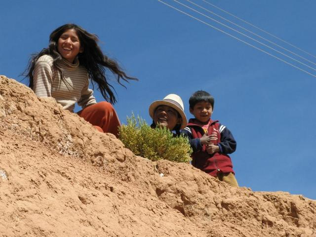
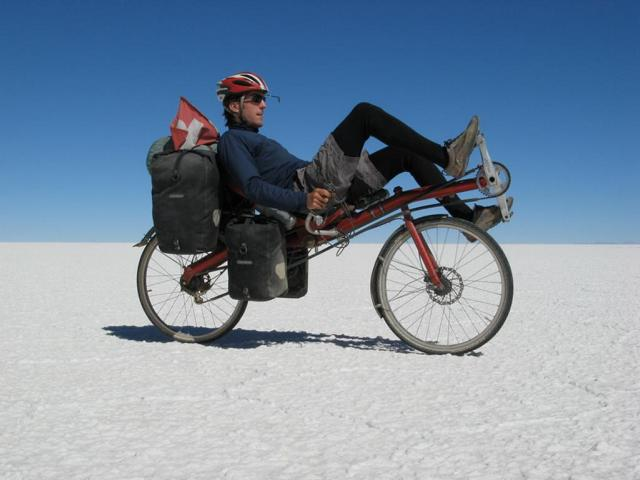
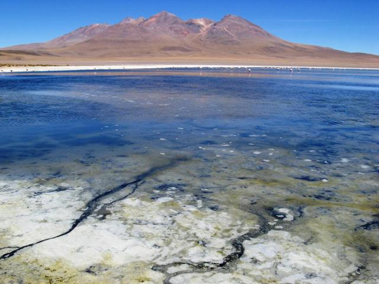
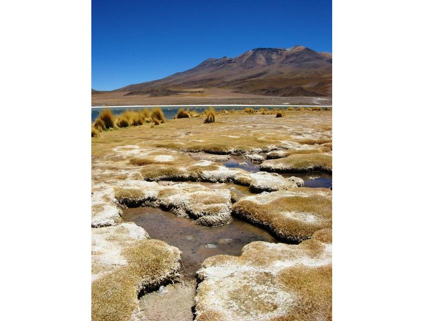
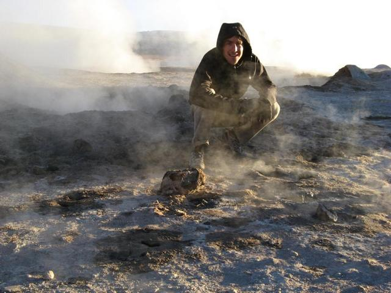

Bolivia


One more station on our gourmet trip, together with Andrew

...down the most dangerous road in the world

...sometimes you could not see ground for hundreds of meters!

On the plano part of the Altiplano

Curious kids everywhere

Driving with closed eyes for minutes - no problem

...with mud and all sorts of water...

...and grassy areas...
...why this is not so wrong (click on the picture to open in a larger window, then click again for large view)

...in bubbling mud...